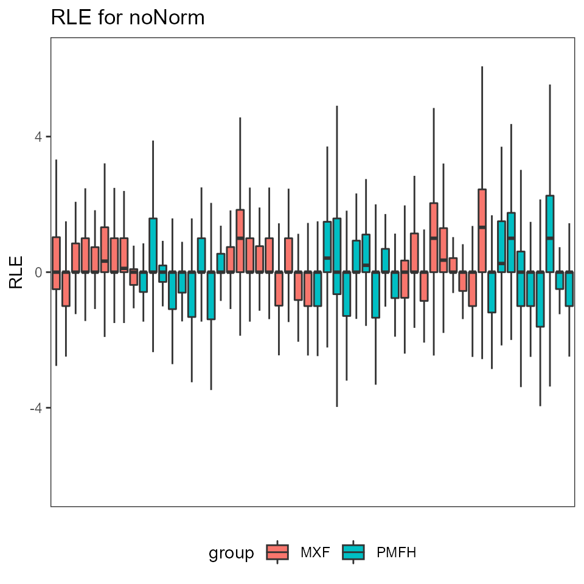
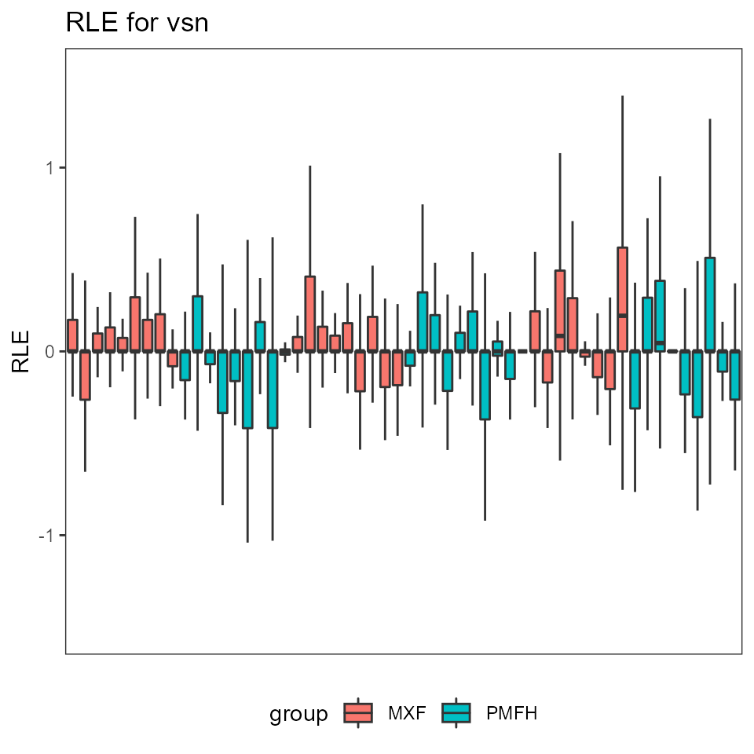
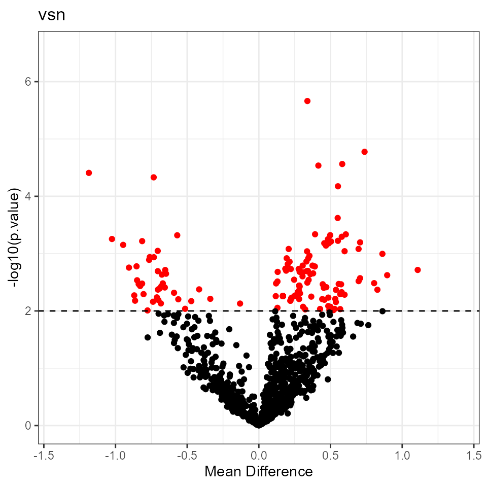
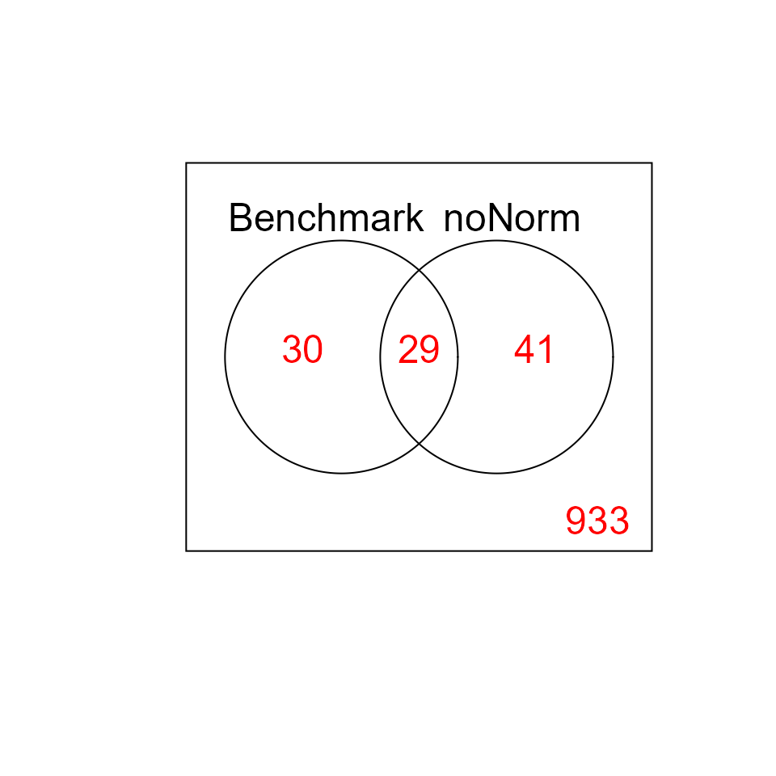
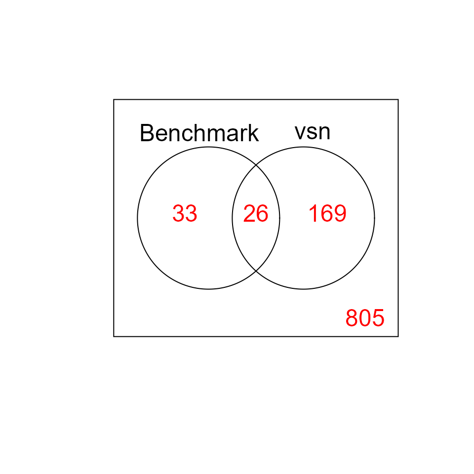
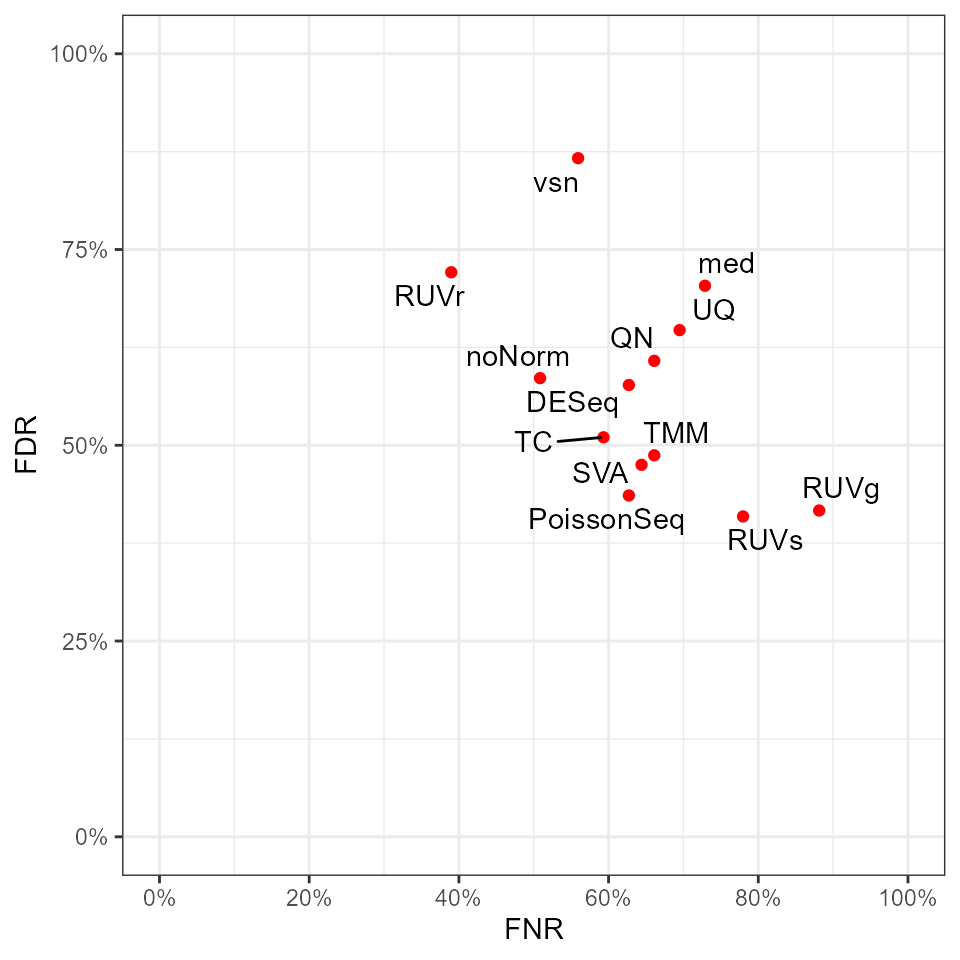

Full_Pipeline.RmdThe test data is normalized by Variance Stabilizing Normalization (VSN) using function justvsn. Any the negative normalized counts are set to 1.
res.vsn <- precision.seq(vsn.norm, method.name="vsn")
We investigate some results.
# Relative log expression print(res.vsn$p.RLE$noNorm) #> Warning: Removed 367 rows containing non-finite values (stat_boxplot).

print(res.vsn$p.RLE$vsn) #> Warning: Removed 1465 rows containing non-finite values (stat_boxplot).

# Volcano plot for DE print(res.vsn$p.volcano$vsn)

# Venn Diagram of DE statuses print(res.vsn$p.venn$noNorm)

print(res.vsn$p.venn$vsn)

# FNR-FDR plot print(res.vsn$p.FNR_FDR)

We repeat the results for a method that computes adjusting factors for the normalization. We use the (already included) method “sva”.
sva.norm <- norm.SVA(data.test, data.group) res.sva <- precision.seq(sva.norm$dat.normed, method.name="sva", adjust.factors=sva.norm$adjust.factor, DE.method="DE.voom", Pval=0.01)